Guía visual con pantallas reales
Cada módulo muestra capturas del portal y de la app tal como se ven hoy, y explica campo por campo qué significa y cómo se usa. Las contraseñas y claves se muestran siempre como asteriscos.
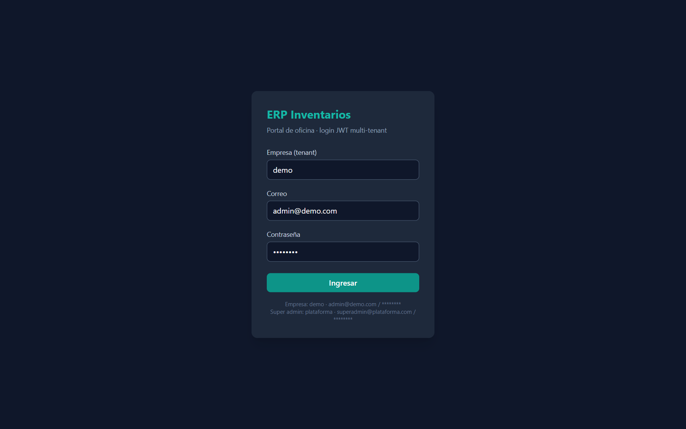
00 · Acceso
Login del portal y de la app, mensajes de error.
Ver pantalla y campos →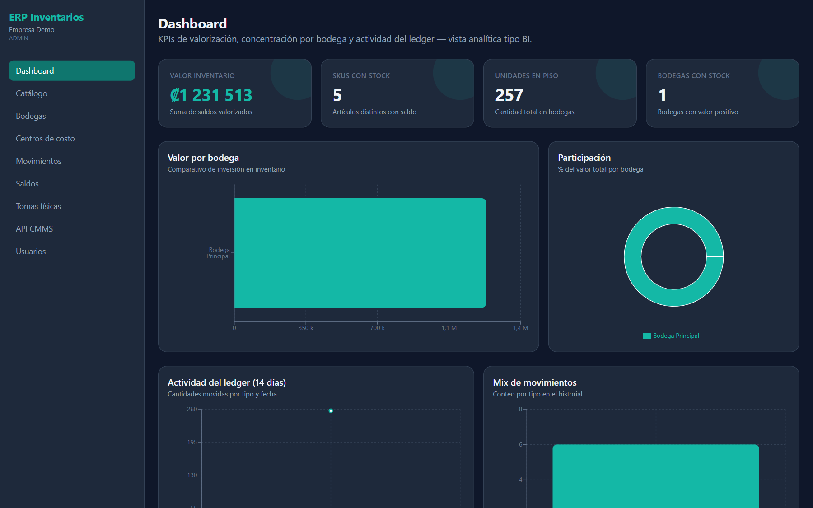
01 · Dashboard
KPIs, gráficos BI y detalle por bodega.
Ver pantalla y campos →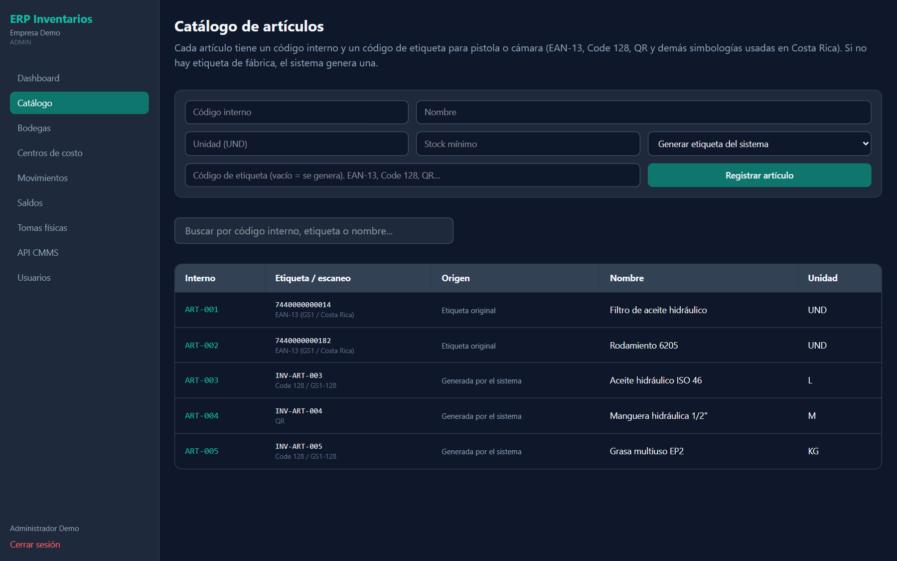
02 · Catálogo
Código interno, etiqueta de escaneo y origen.
Ver pantalla y campos →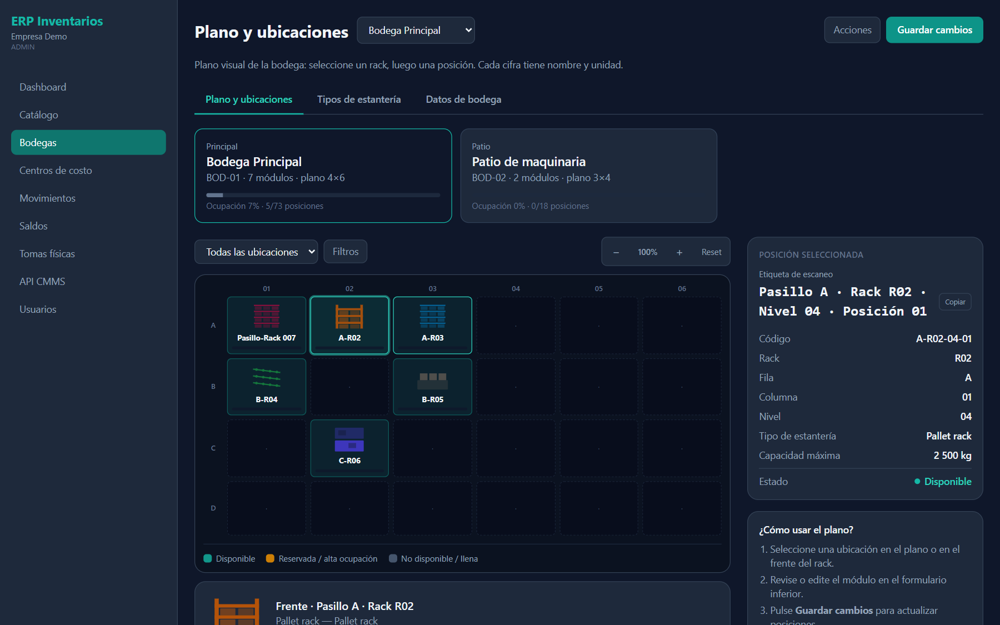
03 · Bodegas
Plano dinámico, racks, tipos y posición seleccionada.
Ver pantalla y campos →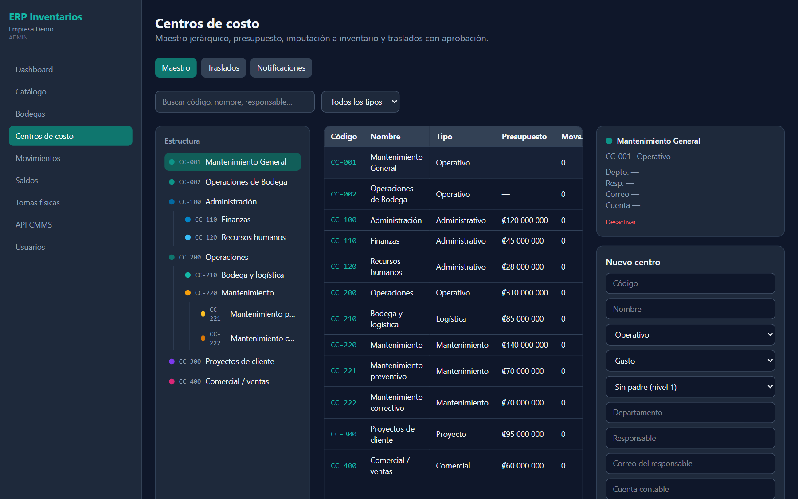
04 · Centros de costo
Maestro jerárquico, traslados y notificaciones.
Ver pantalla y campos →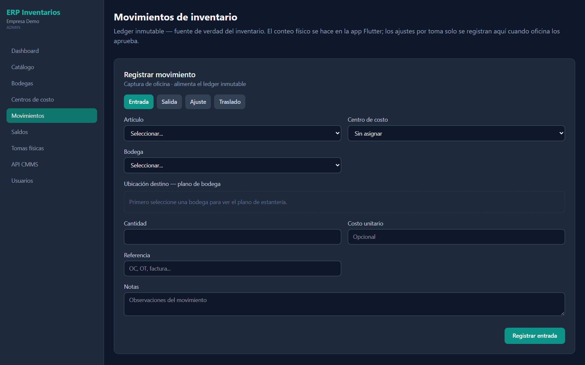
05 · Movimientos
Entrada, salida, ajuste y traslado con plano.
Ver pantalla y campos →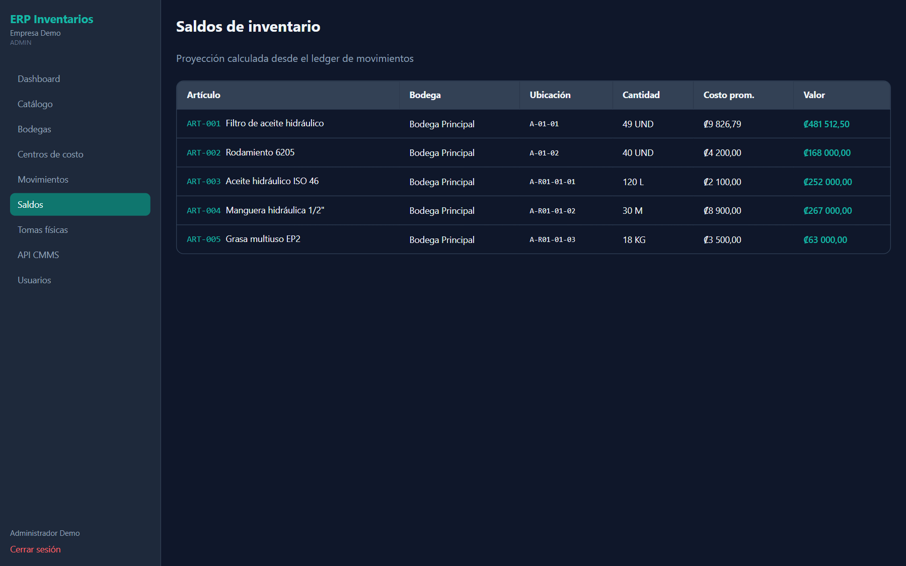
06 · Saldos
Existencias, costo promedio y valor.
Ver pantalla y campos →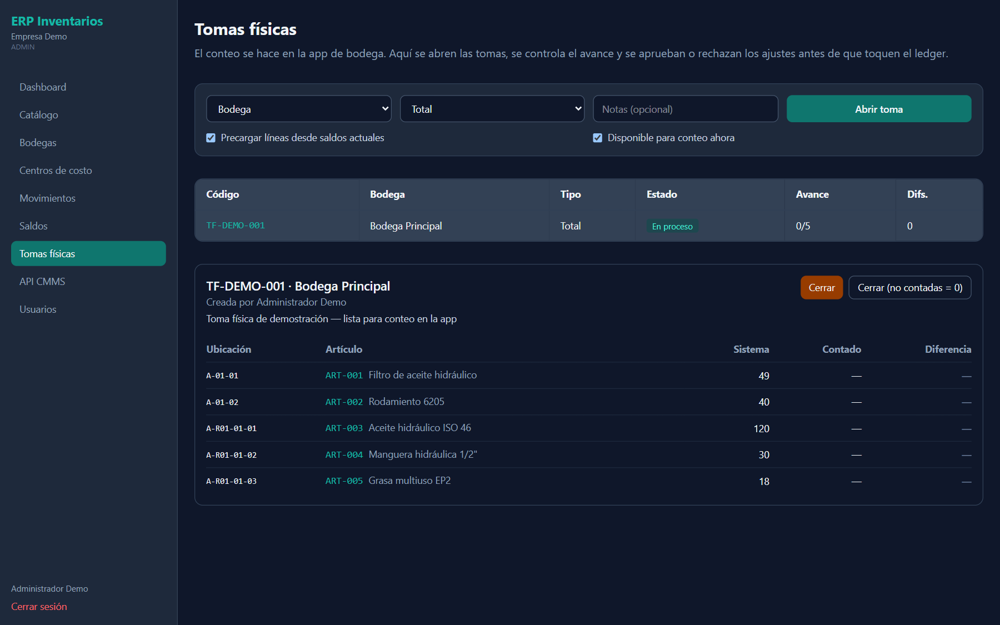
07 · Tomas físicas
Abrir, controlar avance y aprobar ajustes.
Ver pantalla y campos →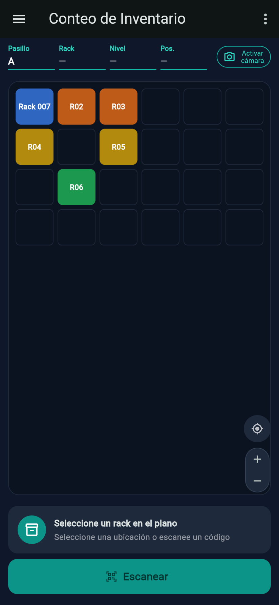
08 · App de bodega
Plano, USTED ESTÁ AQUÍ, cámara a demanda y beep.
Ver pantalla y campos →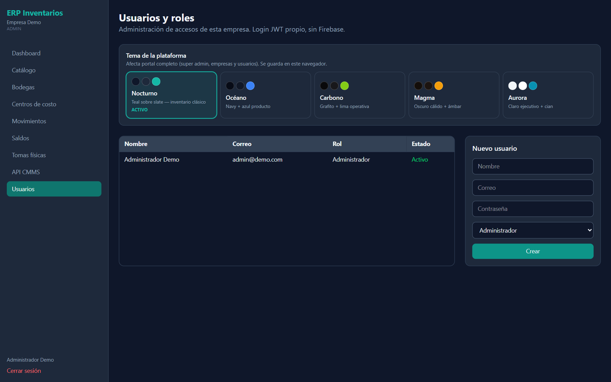
09 · Usuarios
Roles, estado y tema.
Ver pantalla y campos →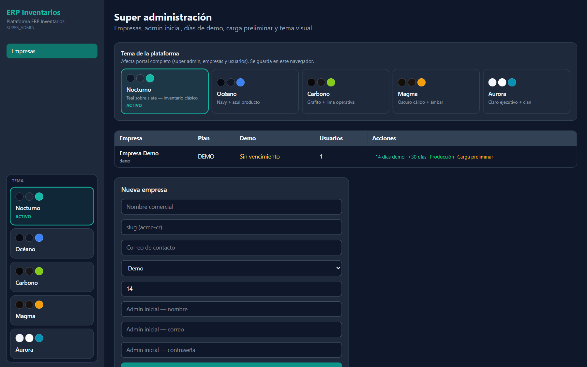
10 · Empresas y temas
Super admin: demo, carga preliminar y 5 temas.
Ver pantalla y campos →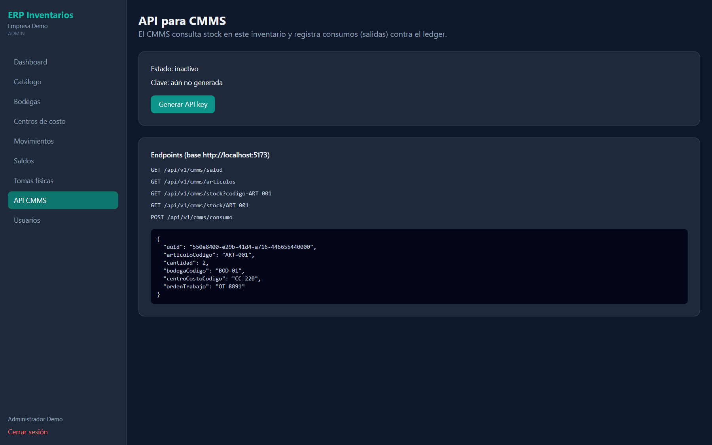
11 · API CMMS
Clave API y endpoints de consumo.
Ver pantalla y campos →